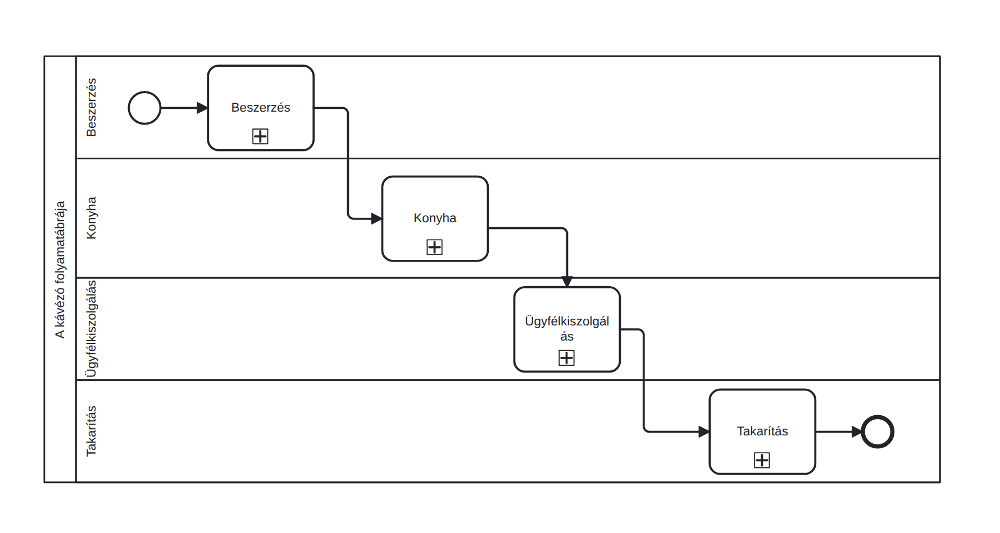
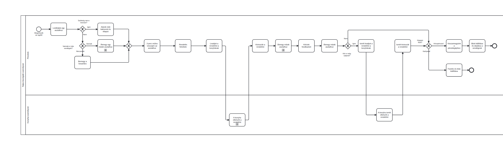
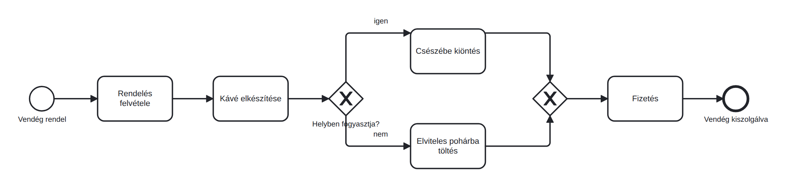

Kávézó: térképtől a részletes modellig
Valódi példán tanulod meg az esemény, tevékenység és XOR-kapu használatát, és megépíted az első elágazó folyamatodat.
- felrajzoltál egy valódi, elágazásokat is tartalmazó folyamatot bpmn.io-ban;
- használtad az alap elemkészletet: esemény, tevékenység, XOR-kapu, címkézett ágak;
- láttad, hogyan néz ki ugyanaz a kávézó folyamattérképként és részletes modellként.
Két nézet ugyanarra a kávézóra - ezt még nem kell megcsinálnod, csak nézd át alaposan
Az első ábra a kávézó működését négy nagy területre bontja. A kis pluszjel összecsukott alfolyamatot jelöl; a részletes tartalom az alfolymat megnyítása után lesz látható. A második ábra az ügyfélkiszolgálás részletesebb nézete, pincér- és konyhai sávval, döntésekkel és visszacsatolással.


- Esemény (kör): valami történik; vékony = kezdő, vastag = záró.
- Tevékenység (lekerekített téglalap): valaki csinál valamit.
- XOR-kapu (rombusz, X): döntési pont, egy ág megy tovább; a kapun kérdés, az ágakon válasz-címke.
- Sáv (lane): ki csinálja; egy medencén (pool) belüli felelősök.
Az XOR elágazás egyetlen útvonalat választ; az XOR összevezetés a kiválasztott ágat vezeti tovább, nem vár mindkét ágra. Az AND (pluszjel a rombuszban) minden kimenő ágat elindít; az AND összevezetés minden bejövő ágra vár.
Példa: a számla kiállítása és az áru kiszedése párhuzamosan történhet. AND elágazás után két tevékenység, majd AND összevezetés következik; a csomagot csak ezután adjuk fel. A hatodik blokkban ilyen modellt is látsz majd.
Építsd meg a kávérendelés elvitellel folyamatábrát
- Nyisd meg a demo.bpmn.io szerkesztőt, és a nyitóoldalon válaszd a create lehetőséget (vagy a szerkesztő bal alsó + ikonját). Új diagram létrehozása előtt mentsd a korábbi munkádat. A kezdő eseményre duplán kattintva adhatsz nevet; a kijelölt elem melletti helyi eszköztár téglalapjával új tevékenységet fűzhetsz hozzá. Egy elem típusát a csavarkulccsal válthatod át.
- Rajzold meg a törzset: Vendég rendel (kezdő esemény) → Rendelés felvétele → Kávé elkészítése.
- Tegyél a folyamatba döntést: a Kávé elkészítése után XOR-kaput (rombusz a palettáról), a kapura írd rá a kérdést: Helyben fogyasztja?
- A kapuból indíts két folyamatágat két új tevékenységhez: igen → Csészébe kiöntés; nem → Elviteles pohárba töltés. A nyilat kijelölve, majd duplán kattintva írd be az ág címkéjét. A következő lépéseket a helyi eszköztárral fűzheted hozzá, meglévő elemeket pedig az összekötő nyíl ikonnal kapcsolhatsz össze.
- Zárd össze a két ágat egy második XOR-kapuval (ennek nem kell kérdés, mivel csak összeköti a két ágat), majd Fizetés → Vendég kiszolgálva (záró esemény).
- Mentsd le kave_xor.bpmn néven a BPA_kurzus mappádba; a 4. blokkban ezt fogjuk szimulálni.

A kapun kérdés van, mindkét kimenő ágon címke (igen/nem), és a két ág újra összezár, mielőtt a fizetéshez ér.
Ha mást látsz: ha a nyíl nem oda mutat, ahova akartad: fogd meg a nyíl végét és húzd át; ha egy elem árván lóg, a bpmn.io halványan jelzi is.
Gyakorlati példa folyamatmodellezésre
A folyamatmodellezés nem csak egy kávézó esetében működik, alkalmazható szinte bármilyen környzetben. Nézd meg az alábbi videót és gondold végig, milyen lehet egy a videóban látható üzem folyamatábrájának komplexitása.
YouTube · VideóZöldségek mosása és csomagolásaVideó megnyitása új lapon →- Reklamációkezelés az ügyfélszolgálaton: ugyanez, csak a "kávé" helyett "panasz".
- Bármely jóváhagyási folyamat: kérdés a kapun, címkék az ágakon.
- A 3. blokkban: biztosítói kárfelvétel, több szereplővel.
- M. Dumas, M. La Rosa, J. Mendling, H. Reijers: Fundamentals of Business Process Management, 2. kiadás, Springer, 2018: 3. fejezet (Essential Process Modeling): a mai elemkészlet tankönyvi mélységben.
- BPMN 2.0 jelöléskártya és specifikáció: omg.org/spec/BPMN/2.0.2.